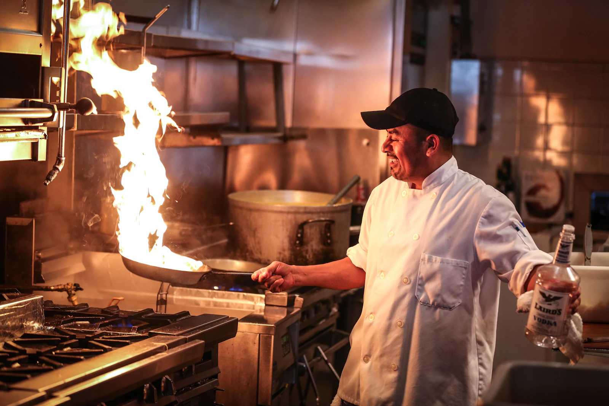

Full Guide to Becoming a Professional Chef
Becoming a professional chef takes curiosity, practice, and a love of good food. Explore the skills, habits, and real kitchen experience that turn passion into a career.

Becoming a professional chef takes curiosity, practice, and a love of good food. Explore the skills, habits, and real kitchen experience that turn passion into a career.
